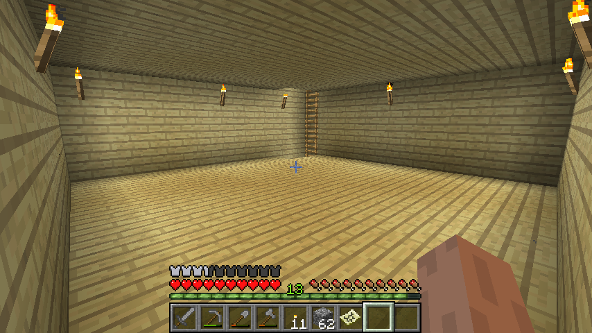

首页
上一页
1
1
2
3
4
5
6
下一页
末页
defanive2
无尽黑夜
14
喂熊
1楼
2012-08-02 13:52
defanive2
无尽黑夜
14
昨天听闻MC 1.3.1出来了之后，更新了一下，去wiki上大致看了一下更新的内容。很久没玩过单机生存了，决定开一个世界来玩玩。生存模式，普通世界生成器，生成建筑，无奖励箱，无作弊，难度正常（反正也就是玩来休闲嘛，不然直接玩hardcore了）
14楼
2012-08-02 13:56
defanive2
无尽黑夜
14
我码字慢，所以直播也慢速，大家不用整天刷新。。这次玩的规划是，随意玩，房子建得好一点，资源收集的差不多了就杀龙什么的。。MC 1.3的新内容在中后期慢慢尝鲜。。
18楼
2012-08-02 13:58
defanive2
无尽黑夜
14
由于昨天晚上已经玩了几个小时了都没有截图，所以现在补截的图和刚开始的情况肯定不一样了，不过也就当是感受一下初期的气氛
19楼
2012-08-02 13:59
defanive2
无尽黑夜
14
出生在一片雨林里面，周围都是树，视野很差，个人最讨厌的环境
21楼
2012-08-02 14:09
defanive2
无尽黑夜
14
于是跑来跑去，跑到了一片湖旁边，视野还算不错，于是决定就在这里起家
22楼
2012-08-02 14:13
defanive2
无尽黑夜
14
周围环境还是挺不错的，后面有一座高山
1.3的世界生成器最大的感觉就是山都被拔高了很多，比125还夸张
同时也表明，这座山底下有可能会挖到绿宝石（根据wiki所说）
23楼
2012-08-02 14:15
defanive2
无尽黑夜
14
那座高山。。
右边的小山就是我第一次开采石头和煤的地方
24楼
2012-08-02 14:20
defanive2
无尽黑夜
14
好吧我初期定下来在这里起家之后，我先手撸了一棵树，大概5个木头，然后合成工作台，合成了木稿一个。。
然后周围看就看到了这座小山，暴露出煤，于是马上跑过来挖了3个石头，换石稿，挖煤。。
总共挖了大约20个左右的煤和30个左右的石头。。
1.3的其中一个更新已经出现了，挖矿的时候给经验，升了几级。。
合成了石斧把周围的树都砍了，尤其是白桦树，做出来的木板很美观，建房的好材料。。
26楼
2012-08-02 14:24
defanive2
无尽黑夜
14
这是我的半成品房子，内部空间每层9x9x3。。
当然不是一晚就建起来的。。
第一晚只建了外墙，甚至还不是9x9的，只是7x7，由于没砍够白桦树，建材不够。。
白桦树得到的木材我都用来做建材，其他合成原料用的是普通的棕色木头。。
第一晚的时候蜘蛛爬进来了，不过已经准备好了石剑简单撸死。。
周围有猪和牛，但是没有羊，于是睡觉不能。。
吃了几个苹果充饥之后，合成点东西，度过无聊一夜。。
27楼
2012-08-02 14:29
defanive2
无尽黑夜
14
后面几天基本上都是撸树建房子，把地板和天花板都换成了白桦木板。。
周围的树都清理了一下，煤还够用插了火把，建了木门。。
收集了很多的木头之后，准备开矿井。。
房子内景一张，当时还没有喷泉。。
左边楼梯底是矿井的入口。。
28楼
2012-08-02 14:33
defanive2
无尽黑夜
14
1x2垂直下井，一边铺楼梯，另一边铺火把。。
1x2的话有两个站位避免了垂直下挖的危险。。
29楼
2012-08-02 14:35
defanive2
无尽黑夜
14
挖到11层的时候停止，在这里开树形矿道。。
主要原因是钻石会出现在0～20层，而且岩浆出现在0～10层，11层相对安全而且没有靠近地底的黑色颗粒灰尘，视野很好。。
下井的地方最后放一个牌子还有2格高的水，这样要快速下井的时候直接跳就可以了，落地不会死（不过这些是后话了，这个时候还没有铁）
30楼
2012-08-02 14:39
defanive2
无尽黑夜
14
垂直下挖的时候RP爆发，找到了6个金矿还有6个钻石矿，不过还没有铁所以暂时无法开采
简单开了一个小房间，放了一个箱子（主要是放供给，木头和食物，不做矿物储存功能），一个工作台和一个火炉
33楼
2012-08-02 14:42
defanive2
无尽黑夜
14
树形矿道，分支间间隔3。。
间隔3的话虽然有一列是无法直接看到的，不过考虑到矿脉主要都会扩散的比较开，绝大部分下都不会漏矿。。
但是间隔3不适合于开采绿宝石，绿宝石的veins是1，就是说没有矿脉，只会单个矿块存在，这样的话会漏掉1/4的绿宝石。。如果追求不漏的话，应该间隔2，这样全部矿都可视
这里可以看到MC 1.3的一个小变化，gravel的材质变了。。
35楼
2012-08-02 14:48
defanive2
无尽黑夜
14
其中一个矿道挖到了一个天然洞穴连接着岩浆湖，做了简单的防护措施。。
以后可以到这里取岩浆了。。
不知道是种子问题还是1.3的世界生成器变了，至今还没有看见天然露天岩浆池，这个岩浆资源比较宝贵。。
此时挖矿收集了20+铁，50+红石，一些金，和5个钻石。。
虽然之前是发现了6个钻石矿，不过考虑到钻石暂时不在需求范围内，只挖了5个，3个合成钻石稿（可以挖黑曜石），剩下2个用来和黑曜石合成附魔台。。
36楼
2012-08-02 14:56
defanive2
无尽黑夜
14

慢慢的开了3层的地下室。。
基础装潢都是以白桦木板为基础，为此我砍了很多的白桦树合成木板。。
第一层地下室打算作为储物间，各种资源分箱子保存。。
第二层是附魔台和书架，以及开一个防火间，里面放黑曜石生成器。防火间打算用雪块做装潢，纯白色很有实验室的味道
第三层是西瓜和南瓜种植场
第四层和第五层合并起来是小麦场，自动收集装置，产物出口在第六层
剩下的地下室就不用开了
主层沿楼梯上去的顶楼准备做成卧室，全玻璃，湖景+山景
37楼
2012-08-02 15:03
defanive2
无尽黑夜
14
南瓜场和西瓜场，很简单的设计
可以用红石做BUD感应自动收取，不过鉴于还没有粘性活塞而且产量需求不大，就不做了
39楼
2012-08-02 15:06
defanive2
无尽黑夜
14
刚刚出了一个南瓜，于是把南瓜苗移到楼梯口远一侧了，因为西瓜的需求会大于南瓜的需求
南瓜种是在周围乱逛的时候发现了一个野生南瓜得到的
南瓜的用处很大，可以做南瓜灯，不错的固态光源，而且可以做雪人，得到的雪可以做成雪块，是最好最廉价的建筑材料之一
40楼
2012-08-02 15:12
defanive2
无尽黑夜
14
1.3的附魔也发生了变化，最高附魔等级降到了30，但是书架的算法仍然不变
在创作模式简单测试了一下，这样就可以达到28级了，再加1个书架就可以达到30级，这个书架就根据美观放到有效位置就可以了
顺便附魔台最后一格总是显示最大的可能的附魔等级，对于高级附魔帮助很大
好吧大概摸清了之后，需要早点开始造甘蔗场了
42楼
2012-08-02 15:24
defanive2
无尽黑夜
14
大概布局了一下，开挖防火间，里面可以放造石机，黑曜石生产机之类的
43楼
2012-08-02 15:28
defanive2
无尽黑夜
14
直播的进度赶上我玩的进度了，不过电脑好卡，开着个IE卡爆了。。
挖了一下防火间，还没挖完，也是打算挖成9x9
双层门，打造点实验室的感觉，最后再把室内用雪块装潢
先去造雪人
44楼
2012-08-02 15:35
defanive2
无尽黑夜
14
造好了雪人，刷了一堆雪
不错，继续挖放火间
挖到一半就可以造黑曜石机了，然后刷几个黑曜石，然后就可以用附魔台了
现在附魔台的价值更高了，由于挖矿可以得到经验，挖一个矿道几乎都可以升一级，用这一级附魔石稿极大概率可以得到效率1（极小概率耐久1），这样很大的提高了挖矿速度
45楼
2012-08-02 15:42
defanive2
无尽黑夜
14
机子太卡了，关一会IE，截图一会再发
46楼
2012-08-02 15:43
defanive2
无尽黑夜
14
好了我来继续直播了
47楼
2012-08-02 16:17
defanive2
无尽黑夜
14
造好了曜石机，简单装潢了一下，可以用了
放了红石之后，铁桶取岩浆，倒到红石上方
48楼
2012-08-02 16:19
defanive2
无尽黑夜
14
得到了一个黑曜石，然后再把岩浆放回去槽里就可以挖取了
突然发现没有钻石稿，把之前地底发现的钻石矿挖了，然后合成钻石稿
49楼
2012-08-02 16:21
defanive2
无尽黑夜
14
挖防火间的时候右边意外发现了铁矿，后来清理一下得知正好是8个
50楼
2012-08-02 16:22
defanive2
无尽黑夜
14
合成钻石稿，嗯这个世界里面的第一个钻石制品
51楼
2012-08-02 16:23
defanive2
无尽黑夜
14
突然发现库存只剩1个钻石了，合成附魔台需要2个，于是跑到了矿井里面把一个钻石矿挖了
钻石矿其实不用急着挖，很多时候留着做记号保护好就可以了
等到得到了FortuneIII附魔的时候再挖，产量平均翻倍
同理绿宝石矿也可以这样
52楼
2012-08-02 16:25
首页
上一页
1
1
2
3
4
5
6
下一页
末页